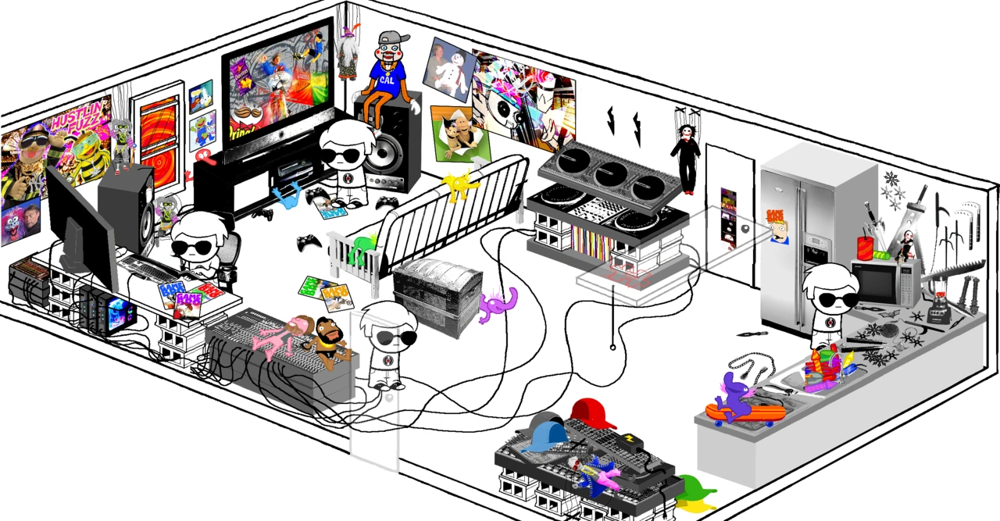
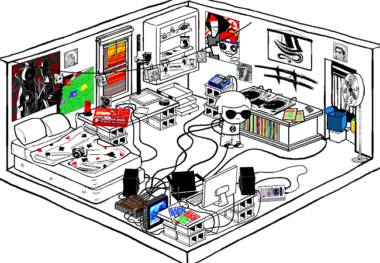

Dave
Dave Strider lives in an apartment in Houston Texas with his Bro who is undoubtedly the coolest person alive who definately isn't abusive in his persuit of training his child. I mean, someone who stores swords in the refrigerator instead of food, makes puppet porn, sets up traps around the house, and routinely strifes with a child on the roof of their high rise apartment (We see this man throw Dave down the stairs during the strife) is definately the coolest person alive (if you have no frame of refference for how children are supposed to be treated that is, which applies to our 13 year old Dave)

Isn't this living room perfectly suited for a child! All the knives and smuppets a young boy could
ever need! And of course in the back on the speaker is our beloved lil Cal, the creepy possessed
puppet our protaginist is terrified of that Bro attacks him with during their rooftop strifes. I'm
not kidding, that puppet is actually possessed by a malevolent entity that wishes harm upon Dave and
everyone he loves but we'll get into that on the Cherub's
pages.
Anyways, yeah this is litteral abuse and our young hero hasn't realized it yet cause he has no real connections to
people in person to use as refference for how people are supposed to be treated by people who care about them
now here's his room

Dave greatly enjoys music and is an aspiring dj, he also collects and preserves dead creatures which are
displayed on the shelf in his room. He also creates a webcomic entitled
Sweet Bro and Hella Jeff
which is ameturishly ilustrated with rather odd and absurdist but somewhat enjoyable humor in my opinion if one is willing to tolerate it.
Dave's server player is Jade Harley
| Dave Strider |
|---|
| Classpect |
| Knight of Time |
| Strife Specibus |
| BladeKind |
| 1/2 BladeKind |
| Chumhandle |
| TurntechGodhead |
|
Ectobiological family |
| Rose Lalonde |
| Roxy Lalonde |
| Dirk Strider |
| Guardian |
|
Bro Strider/ pre scratch Dirk |
|
Post-Scratch alternate |
|
Dave Strider- Famous Director |
| Planet |
|
The Land of Heat and Clockwork |